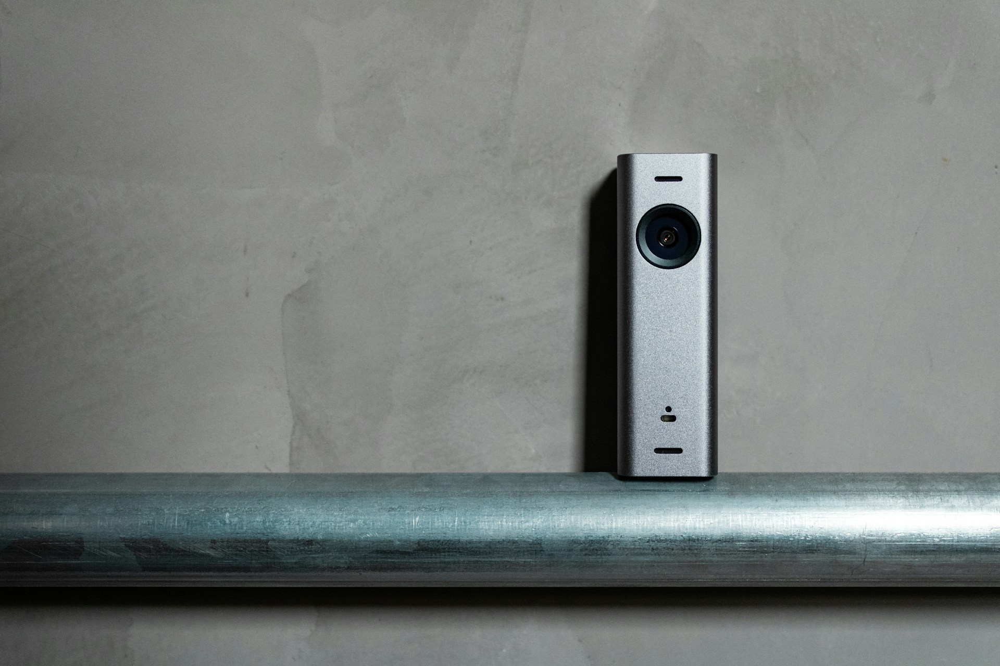

Door Camera
A camera at the entrance provides a visual view of visitors requesting access.

Professional video intercom systems that let you see, communicate with and control access for visitors before opening the entrance.
A video intercom gives you more than a doorbell. It combines visual identification and two-way communication at the point where visitors request access.
We install video intercom systems for homes, offices, apartments, institutions and other controlled entrances.

A properly installed intercom creates a clear communication point between the visitor and the person controlling access.
Video intercom systems bring together cameras, communication hardware, indoor monitors and access controls.
A camera at the entrance provides a visual view of visitors requesting access.
An indoor display allows occupants to view and communicate with visitors.
Communicate with visitors before deciding whether to grant them access.
Compatible systems can connect visitor communication with controlled door or gate access.

Identify visitors and communicate with them before opening the entrance.

Help manage visitor access at reception points and secured entrances.

Provide residents with a convenient way to identify and communicate with visitors.
Video intercom can form part of a broader security environment, working alongside CCTV, gate automation and other access technologies.
ExploreWe evaluate the entrance, wiring requirements and access environment.
We determine suitable positions for cameras, monitors, communication devices and access controls.
The intercom components are installed, connected and configured as a complete system.
We test video, audio and access functions before completing the installation.
Let's Talk about a video intercom system designed around your property and access requirements.